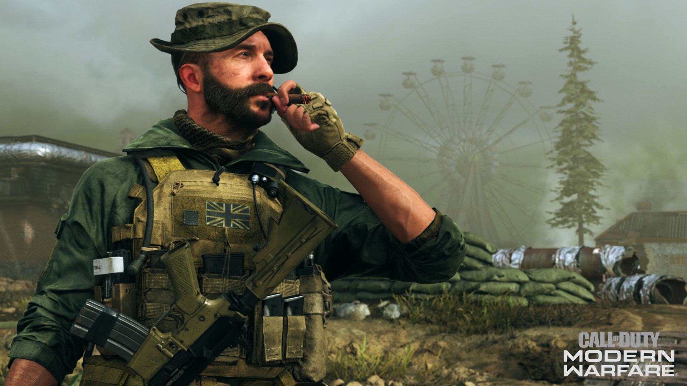
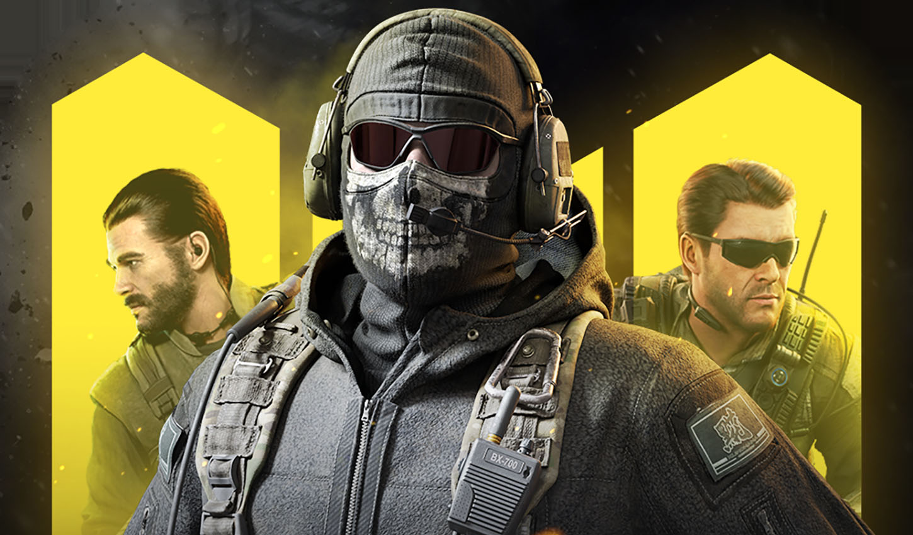
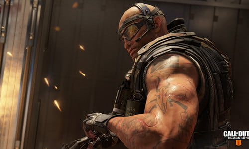
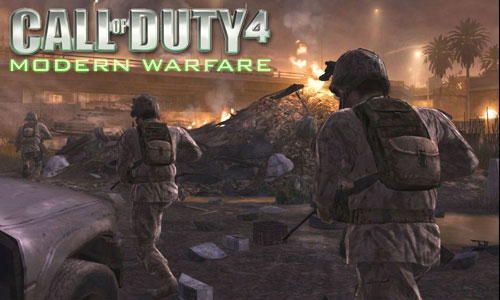
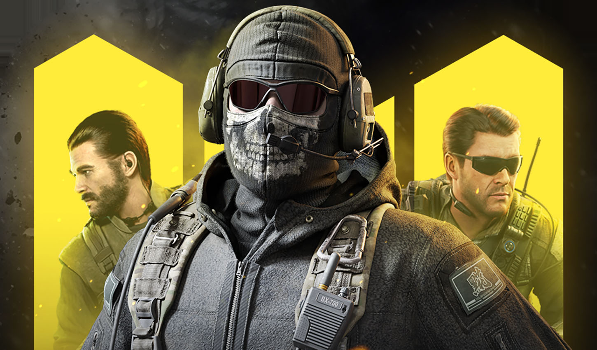
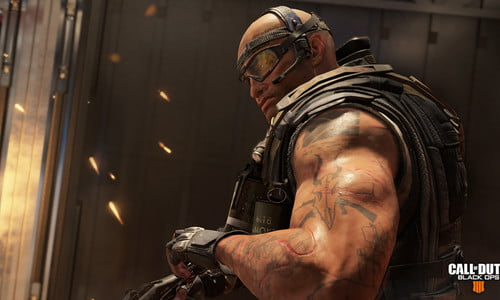
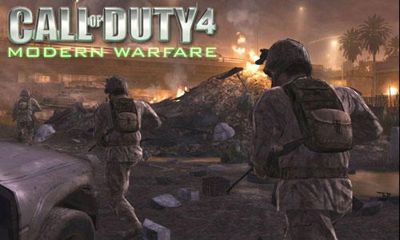

Call of Duty
Call of Duty seria gier komputerowych z gatunku strzelanek pierwszoosobowych o tematyce wojennej, których głównym wydawcą jest amerykańskie przedsiębiorstwo Activision. Początkowo poszczególne gry z serii były skoncentrowane na tematyce II wojny światowej, natomiast od 2007 roku osadzone są w realiach współczesnych. Seria Call of Duty została doceniona przez krytyków i graczy, odnosząc sukces komercyjny, wynoszący do listopada 2011 roku ponad 100 milionów sprzedanych egzemplarzy; w styczniu 2012 roku 40 milionów graczy używało gier z serii do rozgrywki wieloosobowej. Powodzenie serii pociągnęło ze sobą między innymi wydanie komiksu oraz gry karcianej.
Historia
Call of Duty wywodzi się z nowoczesnej w swoim czasie produkcji Medal of Honor: Allied Assault, stworzonej w 2002 roku przez amerykańskie studio 2015, Inc. Konflikt pracowników studia z wydającym Allied Assault przedsiębiorstwem Electronic Arts spowodował, że opuścili oni 2015, Inc. i założyli nowe studio pod nazwą Infinity Ward. W porozumieniu z Activision zdecydowali się na produkcję gry, która konkurowałaby z serią gier Medal of Honor, podejmujących tematykę II wojny światowej. Wiosną 2003 roku ogłoszone zostały prace nad Call of Duty. Ukazała się ona w październiku 2003 roku, przedstawiając II wojnę światową z perspektywy trzech żołnierzy: amerykańskiego, brytyjskiego i radzieckiego. Dzięki dbałości o szczegółowe odwzorowanie realiów wojny oraz sugestywnemu ukazaniu jej koszmaru Call of Duty została pozytywnie przyjęta zarówno przez krytyków, jak i przez graczy, zdobywając pierwszą w historii nagrodę BAFTA dla gry roku. Activision od początku planowało stworzenie nośnej serii, stąd na fali sukcesu pierwowzoru w 2004 roku ukazały się dodatek Call of Duty: United Offensive (producent – Gray Matter Interactive) oraz przeznaczona na konsole gra Call of Duty: Finest Hour (producent – Spark Unlimited).
W 2005 roku Infinity Ward ukończyło kontynuację Call of Duty. Powstała na bazie autorskiego silnika Call of Duty 2 stanowiła krok naprzód w stosunku do pierwowzoru dzięki nowocześniejszej oprawie graficznej oraz bardziej wiarygodnemu oddaniu klimatu II wojny światowej. Wprowadzenie systemu automatycznej regeneracji zdrowia, użytego wcześniej w grze Halo 2, spowodowało, że stał się on standardem obowiązującym nowoczesne gry z gatunku first-person shooter. Tymczasem Activision dokonało zmian produkcyjnych; pracujące przy United Offensive studio Gray Matter Interactive zostało przekształcone w Treyarch, mające produkować konsolowe części serii. Efektem tego było przeznaczone wyłącznie na konsole dzieło Call of Duty 2: Big Red One, przedstawiające wojnę z punktu widzenia żołnierzy amerykańskiej 1. Dywizji Piechoty. Mimo niskiej sprzedaży Big Red One, ze względu na przychylne recenzje krytyków, zapewniła studiu Treyarch stałą pracę przy serii. W 2006 roku jego pracownicy poszli za ciosem, tworząc kolejną część serii, Call of Duty 3, skoncentrowaną głównie na Operacji Overlord. Mimo przychylnych recenzji nie stanowiła ona jednak szczególnej nowości w ramach serii, a Activision rozważało jej zamknięcie, wydając jeszcze w 2007 roku konsolową grę Call of Duty: Roads to Victory (producent – Amaze Entertainment), będącą specjalną edycją Call of Duty 3.
Charakterystyka
Seria Call of Duty od początku wyróżniała się dwoma cechami. Zgodnie z występującym w pierwowzorze sloganem reklamowym „No one fights alone” gracz nie walczy sam podczas działań wojennych, ale współpracuje z komputerowymi sojusznikami. Element ten jest wspólny dla całej serii, podobnie jak brak spójnej narracji – w danej grze gracz wciela się w wielu bohaterów, bez budowania ich poszczególnych charakterystyk. Akcja serii opiera się głównie na z góry ustalonych skryptach, więc gracz nie ma szczególnej kontroli nad wydarzeniami; rekompensatę stanowi widowiskowy sposób prowadzenia akcji przez twórców.
Nad produkcją serii pracują różne studia, spośród nich jednak najważniejszą rolę odgrywają Infinity Ward i Treyarch, którym Activision daje wolną rękę w interpretacji serii. To pierwsze studio spowodowało przeniesienie realiów Call of Duty z II wojny światowej do czasów współczesnych, natomiast to drugie zainicjowało osadzenie akcji w hipotetycznej przyszłości (w grze Black Ops 2). Obaj producenci wytworzyli nawet drugoplanowych bohaterów charakterystycznych dla tworzonych przez siebie gier.
Postacią występującą we wszystkich (poza Call of Duty: Ghosts, serią Black Ops, Advanced Warfare, Infinite Warfare oraz WWII) częściach serii tworzonych przez Infinity Ward jest kapitan Price, który stał się sławny za sprawą podserii Modern Warfare; na jego wzór Treyarch wprowadziło w World at War postać rosyjskiego żołnierza Wiktora Reznowa, który pojawił się w World at War i obu częściach Black Ops.
 




